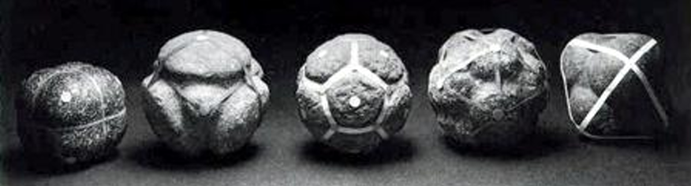
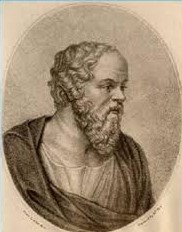
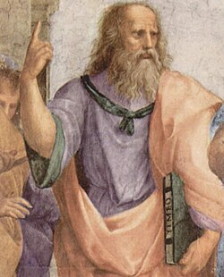
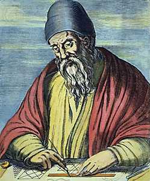
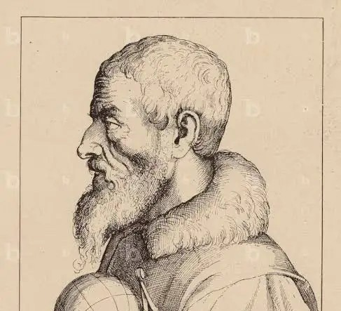
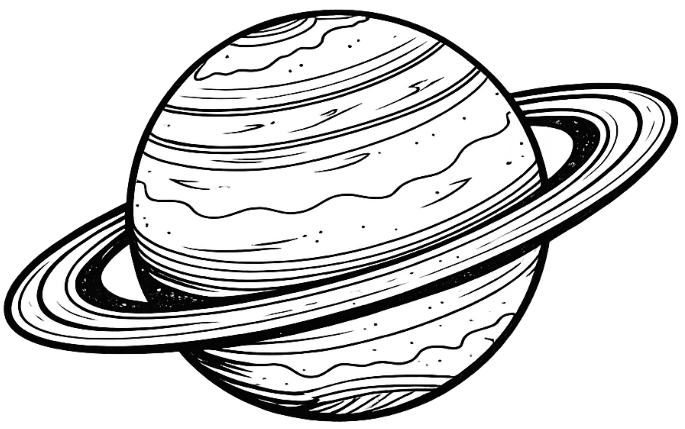
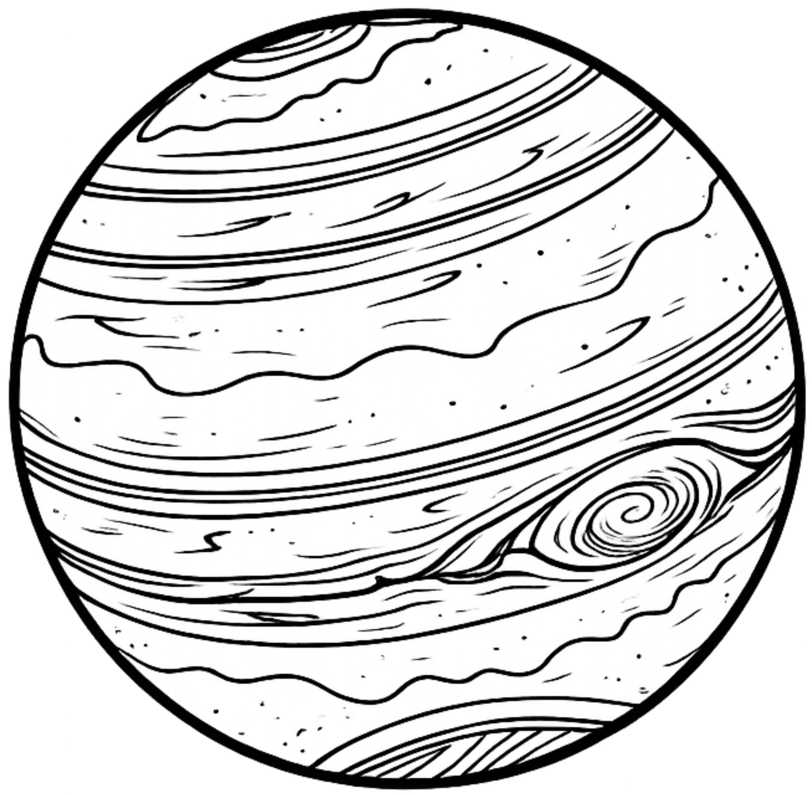
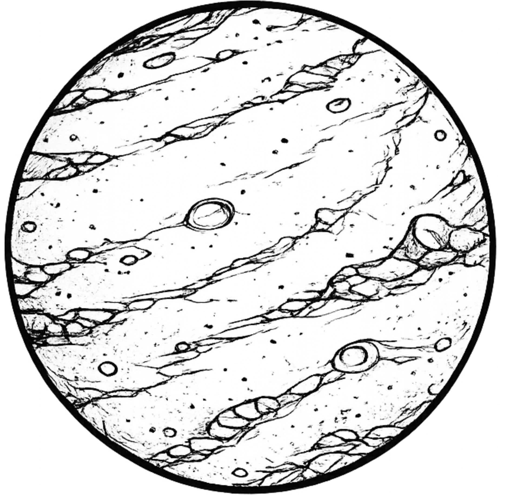
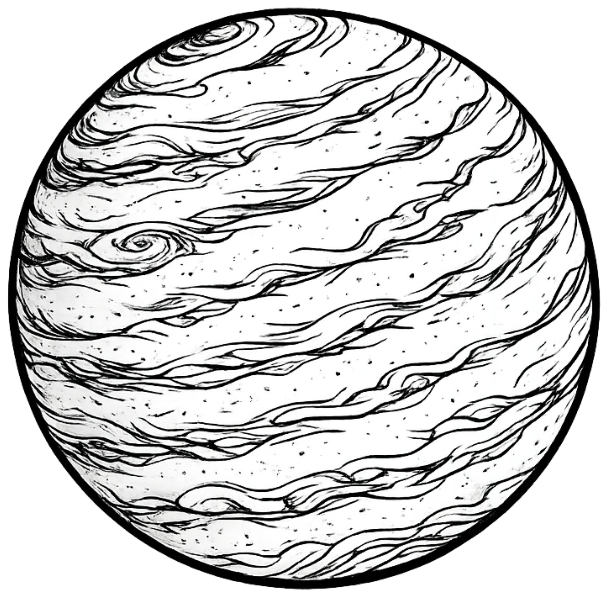
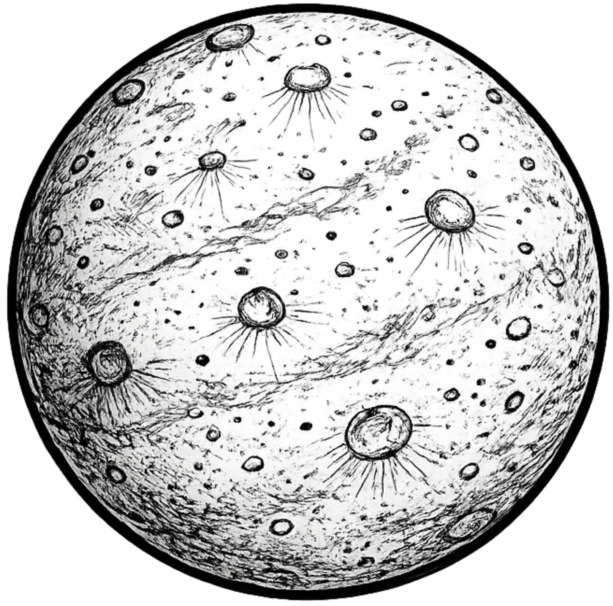

Mysterium Cosmographicum (1596)
Esferas concentricas con sólidos platónicos inscritos, donde la geometría intrenta explicar el orden del universo.
El estudio de los polígonos regulares se remonta a tiempos inclusive anteriores a su formalización en la Grecia clásica, teniendo presencia en diversas eras y culturas, desde las civilizaciones neolíticas hasta el periodo del Renacimiento, donde se reinterpretaron como signos de armonía y orden del universo. A continuación, se presenta una reconstrucción histórica de su evolución.
Los primeros indicios de conocimiento sobre los polígonos regulares datan de tiempos prehistóricos, mucho antes de su formalización en la Antigua Grecia. Se han hallado más de 400 esferas de piedra, que se creen fueron creadas entre los años 3200 y 2500 a.C. en el periodo neolítico en Escocia. Estas piedras, llamadas "Neolitic Carved Stone Balls" , presentan patrones simétricos que evocan la estructura de algunos de los sólidos platónicos (Extremiana, Hernández, y Rivas, 2001).

Figuras neolíticas de los sólidos platónicos (3200-2500 a.C.)
Modelo interactivo de las figuras neolíticas
Pese a que no se puede asegurar su comprensión como poliedros en el sentido matemático, su simetría y su forma sugieren la existencia de un conocimiento geométrico rudimentario. Por esta razón se generan hipótesis sobre cual pudo haber sido el sentido o el uso que se le dio a estas piedras, siendo algunas de estas razones el uso para rituales, juegos o decoraciones (González, 2013).
En la Antigua Grecia (siglos VI y III a.C.) se produce un giro epistemológico que traslada los poliedros del ámbito de la manufactura y el rito al de la demostración y clasificación, resaltandose tres movimientos complementarios durante este periodo con los cuales se forja la clasificación matemática, se dota a los sólidos de un marco cosmológico y proporcional, y se proporciona la demostración rigurosa de su unicidad, lo que fija las bases de la geometría clásica.
El proceso organizado y riguroso de estudiar, definir, clasificar y enumerar estos cuerpos geométricos se inicia en el entorno pitagórico, escuela a la cual se le atribuye la construcción del tetraedro y la del dodecaedro, dándole a estas figuras gran carga simbólica y cosmológica. Estudios revelan el carácter reservado de este tema, dando pie al paradigma de Hipaso de Metaponto (siglo VI–V a.C.), a quien se sabe se sancionó de esta escuela por divulgar el método para inscribir un dodecaedro en la esfera, lo que ilustra el valor esotérico dado a estos conocimientos (Hoyuelos, 2018).
Representación de Pitágoras enseñando en su escuela
Retrato de Hipaso de Metaponto
A él se le atribuye el estudio sistemático de los cinco poliedros regulares ,con la identificación explícita del octaedro y del icosaedro, y la formulación de que no existen otros poliedros convexos regulares distintos del tetraedro, hexaedro, octaedro, dodecaedro e icosaedro. Sus aportes alimentan la teoría de magnitudes inconmensurables (conocidos hoy día como los números irracionales) compilada en el Libro X de Los Elementos y preparan el terreno para la formalización definitiva que realizará Euclides.

Retrato de Teeteto de Atenas
Platón en su obra, el Timeo, inserta los poliedros regulares en una cosmología geométrica: para unir fuego y tierra se requieren dos medios proporcio- nales; así se sitúan agua y aire entre ambos, estableciendo una armonía que vuelve indisoluble al cosmos salvo por su creador (Platón, 2023).
Esta metafísica de la proporción se acompaña de una asociación elemental: tetraedro–fuego (agudeza y movilidad), hexaedro–tierra (estabilidad), octaedro–aire (ligereza) e icosaedro–agua (fluidez); el dodecaedro se reserva para el universo o quintaesencia, “aquello con lo que Dios trazó la figura del Todo” (González, 2013; Platón, 2023)
Aunque el Timeo no pretende aportar demostraciones en sentido matemático, su recepción histórica confiere a estos cuerpos la denominación de “sólidos platónicos” y fija un imaginario filosófico–estético en el que la geometría expresa el orden del mundo sensible.

Retrato de Platón
Los 5 sólidos platónicos
La rigurosidad matemática llega de la mano de Euclides donde en el libro XIII de Los Elementos presenta las construcciones de los cinco poliedros regulares y demuestra su unicidad bajo las condiciones de regularidad y convexidad, y mediante un argumento angular: alrededor de un vértice la suma de los ángulos debe ser menor que \(360^\circ\); esta restricción sólo admite combinaciones como tres, cuatro o cinco triángulos equiláteros, tres cuadrados o tres pentágonos regulares, lo que conduce precisamente a tetraedro, octaedro, icosaedro, cubo y dodecaedro, y excluye cualquier otro (González, 2013). Esta misma demostración es la que se puede observar en ¿Por qué solo son 5 sólidos platónicos?.
Además, Euclides establece relaciones métricas entre la esfera circunscrita y la arista del poliedro inscrito (por ejemplo, en la construcción del tetraedro inscrito muestra que el cuadrado del diámetro de la esfera es tres medios del cuadrado de la arista), reforzando la articulación entre geometría espacial y proporciones que cierra la obra con una auténtica clasificación de los cuerpos regulares (Quesada, 2006a).

Retrato de Euclides
.jpg "Mosaicos regulares de la edición de Billingsley de Los Elementos de Euclides")
Mosaicos regulares de la edición de Billingsley de Los Elementos de Euclides
.jpg "Bosquejo de las proporciones de las aristas de los sólidos platónicos con el diámetro de la esfera circunscrita")
Bosquejo de las proporciones de las aristas de los sólidos platónicos con el diámetro de la esfera circunscrita
Tomada de González, P.L. (2013). Los sólidos platónicos: Historia de los poliedros regulares.
El Renacimiento reactivó el interés por la geometría como lenguaje de orden y proporción, integrando los poliedros en la práctica artística (perspectiva, representación y desarrollos en plano) y en una visión filosófico-cosmológica del mundo. En este horizonte, la divina proporción se convirtió en principio estético y constructivo; Pacioli la articuló con los sólidos platónicos y Leonardo la hizo visible en sus célebres láminas. Paralelamente, autores como Piero della Francesca y Dürer sistematizaron métodos de representación que consolidaron la presencia de los poliedros en la cultura visual de la época, mientras Jamnitzer exploró variaciones formales sin pretensión demostrativa. El proyecto alcanza su culminación simbólica con Kepler, quien, en el Mysterium Cosmographicum, concibió una cosmología poliédrica que enlaza belleza, matemática y orden celeste. Esta sección aborda, primero, el resurgimiento matemático y el simbolismo geométrico y, luego, el modelo cosmológico kepleriano
Luca Pacioli (1445–1517) inspirado en Euclides y Platón, presenta en Divina proportione el estudio de los sólidos platónicos y arquimedianos, estableciendo correspondencias entre la proporción áurea y la divinidad; en la linea del Timeo le atribuye al dodecaedro al cielo o quintaesencia. Aunado a esto, la obra incluye sesenta dibujos realizados por Leonardo Da Vinci (1452–1519), obras que cuentan con notorio uso de la perspectiva (Pacioli, 1509; Platón, 2004).
.jpg "Retrato de Luca Pacioli con un dodecaedro a su derecha, hecha por Jacobo de Barbari (1495)")
Retrato de Luca Pacioli con un dodecaedro a su derecha, hecha por Jacobo de Barbari (1495)

Retrato de Leonardo da Vinci
Inspirado en los dibujos de Leonardo y la connotación simbólica de Platón, Johannes Kepler propone una cosmología poliédrica mediante su obra Mysterium Cosmographicum (1596) donde postula que las seis órbitas planetarias (Mercurio, Venus, Tierra, Marte, Júpiter, Saturno) están separadas por los cinco sólidos platónicos (Kepler, 1619)
Además, en otra de sus grandes obras, el Harmonices Mundi, en su búsqueda del “plan del Creador” y de las “causas formales” del cosmos, concebido como un orden geométrico perfecto (Garcia, 2009), profundiza en los conceptos de convexidad y regularidad de los sólidos platónicos. Este análisis le permitió ampliar la noción de poliedro regular al considerar figuras que conservan la regularidad pero no la convexidad, dando origen a los hoy denominados sólidos de Kepler.

Retrato de Johannes Kepler
En 1750, Leonhard Euler dio a conocer su teorema para poliedros convexos (Teorema de Euler). Él mismo expresó su asombro de que una propiedad tan general de la estereotomía (arte y técnica geométrica de cortar y ensamblar sólidos mediante el trazado preciso de sus superficies y secciones) no hubiese sido observada antes, pese a la antigüedad del estudio de los poliedros (mencionado en su correspondencia con Goldbach). La fórmula posee una prueba sencilla y hoy es objeto de estudio en topología; y que incluso esta fórmula de Euler, junto con las condiciones de regularidad, permite demostrar nuevamente que solo existen 5 poliedros regulares convexos, corroborando la clasificación clásica de Euclides.
Retrato de Leonhard Euler
Realiza un estudio completo de los poliedros regulares, apoyado en el Los Elementos de Euclides, destaca que mientras los polígonos regulares son infinitos, solo hay cinco poliedros regulares.
Retrato de Pierro della Francesca
Artista, matemático y cartógrafo alemán, quien explora a los cinco sólidos platónicos en su pequeño libro Una instrucción verdadera y completa en geometría (1543) mediante distintas perspectiva.

Retrato de Augustin Hirschvogel
Describe los platónicos y arquimedianos, con énfasis en elementos y proyecciones en el plano, dándole especial abordaje al dodecaedro e icosaedro mediante el uso de la proporción áurea.
Retrato de Albert Dürer
Publica Perspectiva corporum regularium (1568), con veintitrés variaciones de cada sólido platónico y ejemplos arquimedianos, sin formalización matemática (Jamnitzer, 1568).

Retrato de Wentzel Jamnitzer
En la modernidad, los sólidos platónicos se estudian desde su simetrías y combinatoria, empleando herramientas de teoría de grupos (área del álgebra que formaliza las simetrías mediante operaciones con estructura algebraica), grafos (estudio de estructuras formadas por vértices y aristas que modelan relaciones) y topología. Este cambio de foco mantiene su papel ejemplar como modelos de regularidad y estructura, debido a que los sólidos platónicos son fuertemente simétricos, es decir, poseen simetría puntual (un centro), múltiples ejes que pasan por ese centro (simetría axial) y planos de simetría que lo contienen. La representación mediante el uso de grafos sirve para clarificar y definir las relaciones entre vértices, aristas y caras, para un estudio mas completo de sus simetrías.
.jpg "Grafos asociados a cada sólido platónico")
Grafos asociados a cada sólido platónico
Tomada de Quesada, C. (2006). Los sólidos platónicos: Historia, Propiedades y Arte.
La trascendencia de los poliedros regulares, excede su rigor geométrico y se instala en el territorio de la filosofía, la teología y la mística desde la antigüedad ya que sus propiedades inspiraron tanto el desarrollo matemático como expresiones artísticas posteriores. En el Timeo, Platón los emplea como vehículos de comprensión metafísica y cosmológica, elevándolos a la categoría de figuras del orden del universo (Mosquera, 2005) y Kepler los vincula con la arquitectura del sistema planetario, interpretándolos como manifestaciones geométricas del orden armónico inscrito en la creación divina. Estas articulaciones entre la geometría, formas naturales y divinidad es el núcleo de la llamada Geometría Sagrada (Saulino, 2021).
La conexión simbólica entre sólidos y elementos fuego, aire, agua, tierra y el universo es desarrollada por Platón en el Timeo y prolonga una cosmogonía ya presente en el pitagorismo, donde cuatro sólidos se vinculan a los cuatro elementos y el dodecaedro representa el universo.
Fuego
Figura aguda y ligera, se asigna al fuego por su máxima movilidad y carácter cortante (Platón, 2016).
Aire
Se asocia al aire y ocupa un rango intermedio de movilidad y agudeza entre el fuego y el agua; y se le atribuyen rasgos de integración y sabiduría (Saulino, 2021).
Tierra
Representa la tierra por su estabilidad y menor movilidad; su superficie cuadrangular es, para Platón, la más firme (Platón, 2016).
Agua
Se asocia al agua y aparece tercero en orden de agudeza y tamaño, con su movilidad inferior solo al cubo; en la simbología reciente se le vincula a transformación y expansión (Saulino, 2021).
Éter/Cosmos
Es reservado para el todo: el Dios se sirvió de él para el todo cuando esbozó su disposición final (Platón, 2023). En el Renacimiento, Pacioli lo denomina quintaesencia o cielo mismo y sostiene que su construcción no es posible sin la proporción divina (Pacioli, 1509).
Bajo una convicción divina de la geometría Johannes Kepler (1571-1630), en su obra Mysterium Cosmographicum de 1596, enlaza los poliedros y una preocupación cosmológica por el número de planetas conocidos, “Para Johannes Kepler conocer la mente de Dios pasaba por entender por qué los planetas eran seis” (Gómez, 2019, p. 7).
El contexto astronómico de la época, con seis planetas aceptados (Mercurio, Venus, Tierra, Marte, Júpiter y Saturno), se integra a una imaginación geométrica que concibe el sistema solar como anidamiento de los sólidos Platónicos, “Kepler pensó que los dos números estaban vinculados: hay sólo seis planetas porque hay sólo cinco poliedros regulares” (Rodríguez, 2014, p. 13).

Saturno - Júpiter
Dentro de la esfera que representaba la órbita de Saturno, Kepler colocó un hexaedro o cubo inscrito. En el interior de este sólido situó otra esfera que correspondía a la órbita de Júpiter. Con ello intentaba mostrar que la separación entre estos dos planetas podía explicarse mediante la geometría del cubo (Padrón, 2015).

Jupiter - Marte
En la esfera asociada a Júpiter, Kepler inscribió un tetraedro. La esfera inscrita dentro de este sólido representaba la órbita de Marte, estableciendo así una nueva relación geométrica entre las distancias planetarias (Padrón, 2015).

Marte - Tierra
Entre las esferas correspondientes a Marte y la Tierra, Kepler ubicó un dodecaedro. Este sólido servía como estructura intermedia que explicaba la separación entre ambas órbitas dentro de su modelo cosmológico (Padrón, 2015).
Tierra - Venus
Entre las órbitas de la Tierra y Venus, el astrónomo colocó un icosaedro inscrito entre las esferas. De esta manera mantenía la secuencia de sólidos platónicos como principio organizador de las distancias del sistema solar (Padrón, 2015).

Venus - Mercurio
Finalmente, entre las esferas de Venus y Mercurio situó un octaedro. En el centro del sistema, Kepler colocó el Sol, completando así su representación geométrica del cosmos basada en los cinco sólidos platónicos (Padrón, 2015).

Según González (2013), “Al creer que había reconocido el esqueleto invisible del Universo en esas estructuras perfectas que sostenían las esferas de los seis planetas, llamó a su revelación El Misterio Cósmico” (p. 10), lo cual da sentido al nombre de su obra.
Apesar de que en 1609 Kepler descubre que las orbitas planetarias no son circulares sino elípticas, mantiene su representación Solar, utilizando como radios la distancia media para cada orbita (Gómez, 2019).
Todo esto deja ver una similitud entre la visión de Kepler con la de Platón, que incluso, Kepler intuye que, de todos los sólidos regulares, el tetraedro es el que encierra menos volumen para una misma superficie y el icosaedro el que encierra más, de ahí que relacione la razón superficie volumen con cualidades de sequedad y humedad, asignando el fuego al tetraedro por ser lo más seco y el agua al icosaedro por ser lo más húmedo, el cubo queda vinculado a la tierra por su mayor estabilidad, el octaedro, fácil de hacer girar si se sujeta por vértices opuestos con pulgar e índice, simboliza la inestabilidad del aire, y el dodecaedro se asocia al universo porque sus doce caras evocan los doce signos del zodíaco (González, 2013).
El número áurea \(\phi= \tfrac{1+\sqrt{5}}{2}\approx 1.618\) o número de oro, ocupa un lugar central en la tradición pitagórica ya que reúne dos dimensiones: por un lado, una propiedad matemática bien definida; por el otro, una lectura mística y esotérico asociada a la armonía del cosmos (Romañach y Toboso, 2016). Diversos autores la presentan como un principio universal de belleza (Ghyka, 1983), en el renacimiento, Luca Pacioli le dio la denominación “divina” y fundamento su valor simbólico mediante analogías con atributos divinos (Pacioli, 1509).
La razón áurea “\(\phi\)” se encuentra presente en las figuras pentagonales, por lo que está estrechamente relacionada al dodecaedro, y de manera dual, al icosaedro. En el pentágono regular la razón entre la diagonal y la medida de sus lados es \(\phi\), con lo cual se cumple que para un pentágono regular cualquiera de lado “\(a\)”, la diagonal de este va a medir \(a \cdot\phi\) (Budinski, 2016; Romañach y Toboso, 2016)
.jpg "Razón Áurea entre la diagonal y el lado de un pentágono")
Razón Áurea entre la diagonal y el lado de un pentágono
De esta forma es posible establecer un proceso constructivo donde el dodecaedro puede obtenerse a partir de un cubo interno y de tres rectángulos ortogonales ligados a la proporción áurea. De manera dual, el icosaedro se construye a partir de tres rectángulos áureos mutuamente ortogonales, con lados en proporción “\(1:\phi\)”; en la descripción por coordenadas de estos sólidos, aparece de manera explicita (Romañach y Toboso, 2016).
El numero de oro se encuentra presente en el pentagrama, símbolo utilizado como emblema por parte de la escuela pitagórica (ver Figura 16), retomando la propiedad presente en Los Elementos de Euclides, donde este demuestra que en el pentágono regular las diagonales se cortan en media y extrema razón (Romañach y Toboso, 2016). En De divina proportione, Pacioli fundamenta su clasificación de la proporción divina en propiedades como su unicidad, la invariabilidad de \(\phi\), su irracionalidad y su función ordenadora en el dodecaedro (quintaesencia/ universo). Según su interpretación, el numero áureo se puede considerar símbolo de crecimiento, recurrencia e identidad a la variedad, y como paradigma de armonía formal en contextos filosóficos y artísticos (Bonell, 1999).
.png "Pentagrama pitagórico")
Pentagrama pitagórico